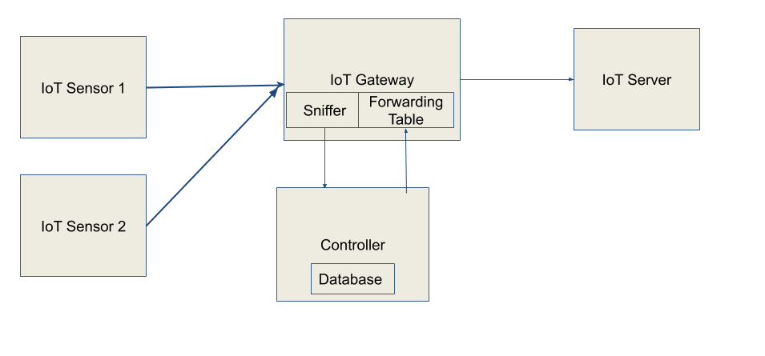

Fig 1. The container-testbed showing how the five containers, representing components of an IoT system, are interconnected.
Objective:
The project’s objective is to develop a framework that overcomes the limitations of the Manufacture Usage Description (MUD) framework and thereby, makes IoT systems more secure. The framework monitors the behavior of IoT devices, and restricts the devices to behave as per their intended purpose.
Overview:
The framework observes the communications of IoT devices over a period of time, and learns a model for the normal behavior of each device. This model represents their intended purpose. The framework then validates the communications of all devices against their corresponding normal models in real time. Any abnormalities, i.e. deviations from the normal model, are detected. The misbehaving devices are then isolated and blocked, before they can they do damage.
This software creates a container-based testbed wherein components of an IoT system (Sensors, Gateway and Server) along with the MUD Controller are simulated as Linux containers, as depicted in Fig. 1. A block diagram of the framework and detailed description can be found in sections 3 and 4 of the paper titled 'Clearer than Mud: Extending Manufacturer Usage Description (MUD) for Securing IoT Systems'.
Dependencies:
The software was developed using python and bash scripts.
The explicit dependencies are -
Tshark
Python open source libraries - smtlib, sklearn, scipy, matplotlib, pyang
On a Linux host, install and configure LXD by following the steps at: LXD Installation and Configuration. This page also explains how to transfer file from the host to containers using the 'lxc file push' command, and how to login to an lxd container. These commands will be needed in the next steps.
Execute the bash script - 'Utils/setupInfrastructure.sh'. This script will launch five lxc Linux containers, running Ubuntu 16.04. These five containers represent - IoT Sensor 1, IoT Sensor 2, IoT Gateway, Controller and the IoT Server. They are inter-connected as show in Figure 1.
Copy the content of the Controller folder to the Controller container. You can zip up the Controller folder at the host, push to the container using the 'lxc file push' command and then unzip at the container.
Login to the Controller container and execute the 'installControllerDependencies.sh' bash script. This script install all python dependencies. It also generates an SSH key and adds the Gateway to the known hosts of the Controller. Press 'y' or Enter whenever prompted.
Add the public SSH key from the Controller container to the Gateway container's authorized_keys. This will allow the Controller to programmatically login to the Gateway to modify IP Table rules
Login to the Gateway container and execute the 'installGatewayDependencies.sh' bash script. This will install tshark at the Gateway. Press 'y' when prompted.
Using the framework to enforce security:
Login to the Server container and start the server by executing './server.py'.
Login to the Sensor containers and start the simulated sensors by executing "./sensor.py". The sensors are programmed to send short and long messages, with different inter-arrival times. Refer to sensor.py for details.
The Server should now receive data from the Sensors, and print the same to console, using a different color for each of the two sensors.
Login to the Controller container and run the "Controller/FeatureExtractor/featureExtractor.py" script. Use 'python featureExtractor.py'.
Login to the Gateway container and run the "sniffer.sh" bash script.
The Controller will now eavesdrop on the Sensor's communications to the Server via the Gateway, and extract features from the packets as per the configuration file. The extracted features are printed to console and saved under the 'Controller/FeatureExtractor/database' folder. The sniffer process send packets to the Controller via a TCP socket. The socket requires the featureExtractor script to be started first, before the sniffer.
Allow the feature extractor to run for 5-6 minutes, and then run 'Controller/Learning/clusterer.py' using 'python clusterer.py'. The clusterer will perform clustering on the saved features and generate the normal behaviour models.
Stop and restart the feature extractor and sniffer, in order. The feature extractor will now read the normal models on startup and validate the sensor's real time communications against the normal models.
Login to Sensor 1 or 2 and run "hackSensor.py" using './hackSensor.py'. The sensor will behave abnormally by changing the inter-arrival time of messages.
The Controller will detect Sensor 1's abnormal behaviour and apply an IP table rule at the Gateway to block it.
The console logs at the Server will confirm that the misbehaving sensor has been blocked at the Gateway.
To unblock all sensors at the Gateway, execute the 'unblockAllSensors.sh' script inside the Gateway container.
A sensor can be commanded to revert to normal behaviour by running the script 'unhackSensor.py' inside the Sensor container.
If the sensor has been "unhacked" and unblocked at the Gateway, the Server will again start receiving messages from that sensor.